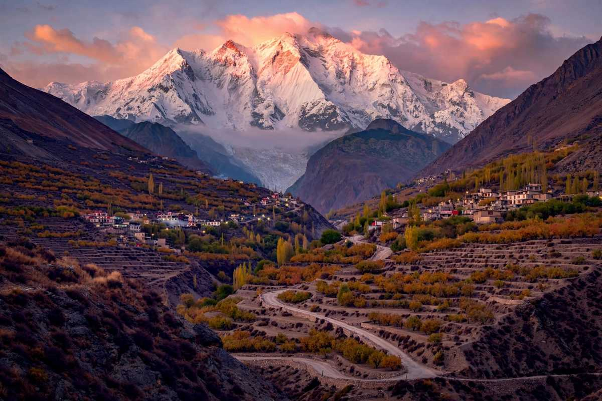
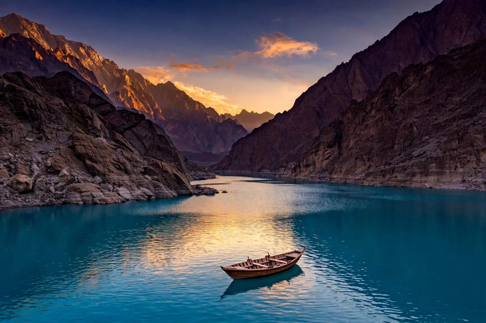
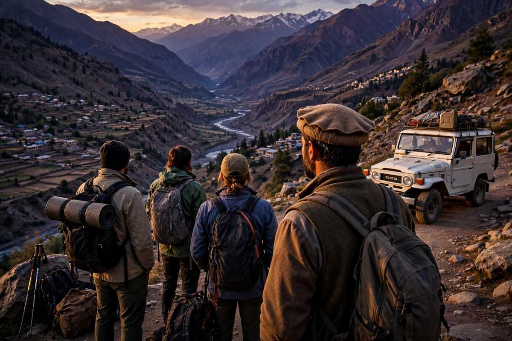

Day 1
Islamabad to Chilas
Depart Islamabad at dawn and drive the Karakoram Highway, stopping for tea where the Indus bends below Nanga Parbat. Overnight in Chilas.
Fictional tour operator · Est. for this demo
Some journeys you feel before you can name them.
Small-group journeys through Hunza, Skardu, Swat and Neelum — plus a short shelf of international escapes — each with a day-by-day itinerary, an honest price and seats you can count.
Browse all 10 tours Why travel with us

The signature route · Hunza Valley Classic (demo)
Keep scrolling — the route walks itself, photo by photo. Every stop below is a day from this tour's own itinerary.
Day 1
Depart Islamabad at dawn and drive the Karakoram Highway, stopping for tea where the Indus bends below Nanga Parbat. Overnight in Chilas.

Day 2
Continue to Gilgit and up into Hunza. Evening walk through Karimabad bazaar and sunset at the Baltit Fort viewpoint.
Day 3
Boat on the turquoise water of Attabad Lake, cross the Hussaini suspension bridge and photograph the Passu Cones at golden hour.

Day 4
Drive to the Khunjerab Pass on the Pakistan–China border (4,693 m), the highest paved border crossing in the world, and return to Karimabad.
Day 5
Fly Gilgit to Islamabad (weather permitting) or drive the highway back, arriving in the evening.
How booking works here
Every tour lists fixed demo departure dates with the exact seats remaining, computed live from bookings made on this device.
Adults, children at the stated 60% child fare, and add-ons are priced line by line before you confirm. Nothing is charged — this is a demo.
You get a booking reference (for example TR-DEMO-####) and the booking waits in My Bookings, where cancelling returns the seats to the departure.
Demo clock: today in this demo is . Departure dates and seat counts are calculated against that fixed date so the demo behaves identically on every visit.
Guided by people who drive these roads
Our fictional crews are written the way a real northern operator works: licensed local guides, group sizes capped between 10 and 20, and itineraries that admit a mountain road takes the time it takes.